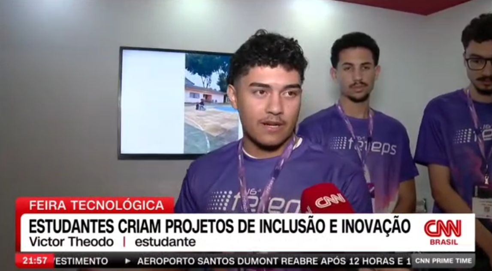

🎤 Entrevista • CNN Brasil
Entrevista concedida durante a FETEPS 2025 sobre o projeto WACS – Autonomia Inteligente para PCDs, abordando inovação, impacto social e tecnologia.
FETEPS 2025WACSInovação
Portfólio
Estudante de Desenvolvimento de Sistemas e entusiasta de tecnologia. Criando soluções digitais com foco em qualidade, inovação e impacto real.
Sou Victor Theodoro, Desenvolvedor Fullstack e CEO da Print 3D. Atualmente cursando Desenvolvimento de Sistemas e especializado em impressão 3D. Apaixonado por tecnologia, programação e criação de soluções inovadoras.
Maior Feira de Tecnologia Pública da América Latina FETEPS
Representante do projeto WACS da Etec de Registro no maior evento acadêmico de tecnologia e inovação do Brasil. Reconhecido por inovação, acessibilidade e qualidade técnica do projeto na Feira Tecnológica do Centro Paula Souza.
Projeto WACS - Autonomia Inteligente para PCDs. Reconhecido pelo impacto social e inovação. Campeão pela segunda vez consecutiva na feira com projetos diferentes.
Projeto sobre Educação Sexual reconhecido pela relevância e impacto na comunidade. Conquista obtida durante o 2º ano do Ensino Médio no curso de Desenvolvimento de Sistemas.
Campeão do 7º Campeonato Brasileiro de Fisiculturismo na categoria Men's Physique Sub Junior até 18 anos. Federação L.P.M., realizado em Osasco-SP.
Primeiro lugar no Campeonato de RoboCode, resultando na seleção como finalista para representar a instituição na segunda fase, competindo contra outras unidades.
Segundo lugar no Torneio de RoboCode organizado pelo Centro Paula Souza. Destaque por excepcionais habilidades de programação e estratégia robótica com o projeto BarbieScript.
Código fonte e documentação do robô vencedor do 2º lugar no Torneio RoboCode 2023. Projeto completo em Java com estratégias avançadas.
Projetos e estudos em C# para desenvolvimento de sistemas. Exercícios, práticas e implementações do curso de Desenvolvimento de Sistemas 2024.
Atividades e projetos das disciplinas de Programação de Aplicativos Mobile I e II. Desenvolvimento de apps com JavaScript e frameworks modernos.
Atividades e exercícios da disciplina Banco de Dados II em SQL. Queries, procedures, triggers e otimizações de banco de dados.
Projetos desenvolvidos na disciplina Programação Web II utilizando Bootstrap. Interfaces responsivas e modernas.
Repositório com atividades, anotações e projetos de desenvolvimento de jogos na plataforma Game Maker Studio 2. Estudos e práticas de game development.
Fale comigo pelos canais abaixo: